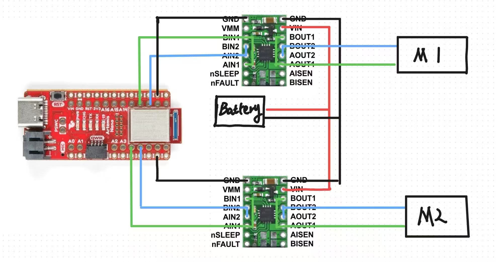
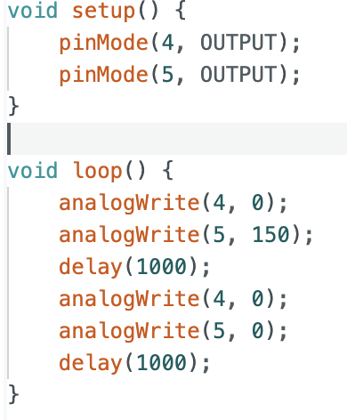
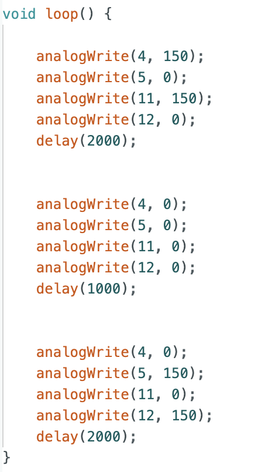
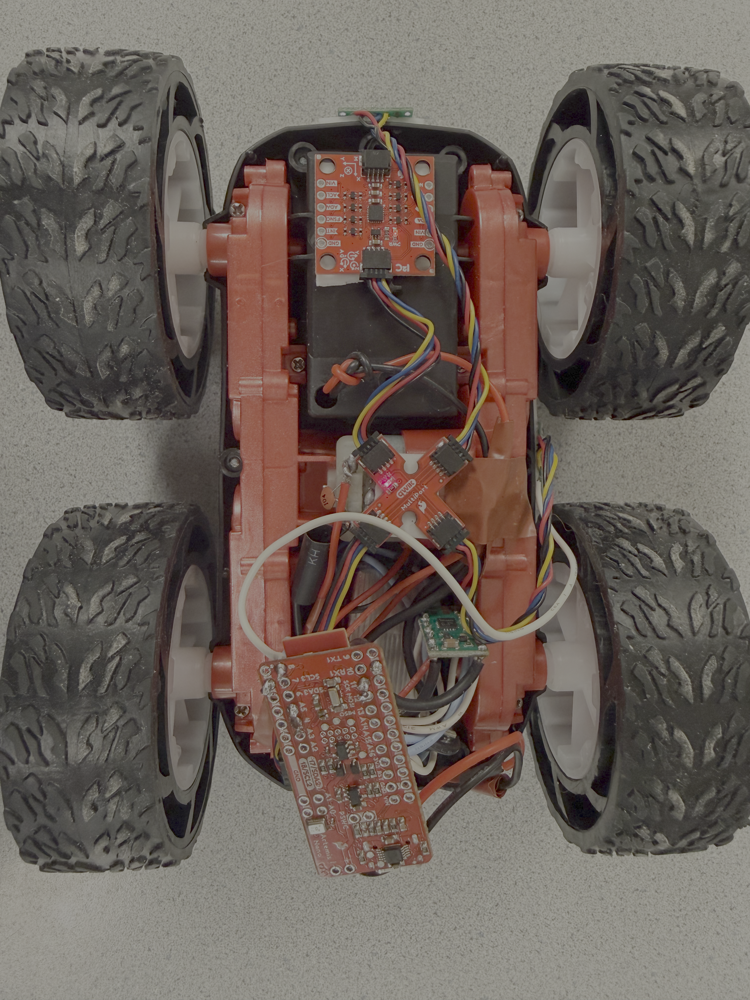
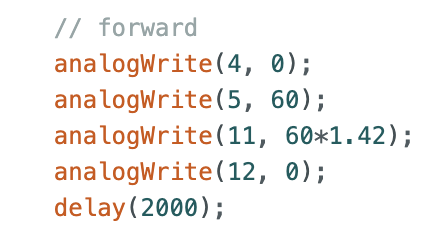

Lab 4: Motors and Open Loop Control
Prelab
Below is my wiring diagram. I'm using GPIO ports 4, 5, 11, and 12 of the Artemis development board to drive the motor, and I've connected the input and output terminals of the motor driver in parallel. The Artemis and the motor use batteries from different sources, primarily to ensure stable operation of the Artemis.

Task 1 Motor Driver Testing
After connecting two motor drivers, I supplied a constant 3.7V voltage to the motors using a power supply and connected an oscilloscope to the corresponding output terminal, using the analogWrite function to drive the motor drivers.

The result was the following two PWM waveforms. As you can see, the square wave on the oscilloscope is complete, indicating that the motor drivers are functioning correctly.


Task 2 Wheels rotating with power supply
With power supplied by the power supply, I used the following code to test the simultaneous rotation of both wheels.

Task 3 Wheels rotating with battery
Next, I soldered the positive and negative terminals of the battery compartment to the power terminals of the two motor drivers and powered the car with the battery. The video below shows both wheels rotating.
Below is a top view of the car after I assembled it.

Task 4 Discussion on PWM lower limit
To determine the minimum PWM value required for the car to move forward from a standstill, I adjusted the PWM value of the car from 50 down and eventually found that the minimum PWM value required to overcome static friction for the car to move forward was 35. Similarly, by making the wheels on both sides rotate in opposite directions, axial rotation can be achieved. Starting from 150 and adjusting down, I found that the minimum PWM value for axial rotation was 120.
Task 5 Calibration
During linear calibration, I found that if the PWM values of the motors on both sides were the same, the car always moved to the left and forward, indicating that under the same PWM control, the right wheel always rotated faster than the left. Therefore, I multiplied the left wheel by a coefficient to make the speeds of the left and right wheels the same. After repeated trials, this coefficient was determined to be 1.42.

Task 6 Open Loop Control
I wrote open-loop control code to combine axial turning and linear motion of the car.

Task 7 AnalogWrite Frequency
Based on the oscilloscope readings above, Artemis's analogWrite output frequency is 183Hz, which I believe is sufficient for a motor, as the previously calculated TOF output frequency is 10Hz, indicating that the PWM update speed is fast enough to keep up with the data collected by the sensor. Manually configuring the timer to update the PWM, I think, has the advantage of making the motor current smoother and the operation more stable.
Task 8 More Discussion with Minimum PWM
To measure the PWM values for moving the car and turning along the axis without overcoming static friction, I first started the car moving and then lowered the PWM value. After repeated experiments, the lowest PWM value for moving the car forward without
Statement
I got much help from Yueming Liu's page.